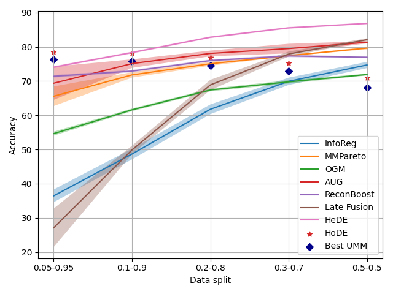
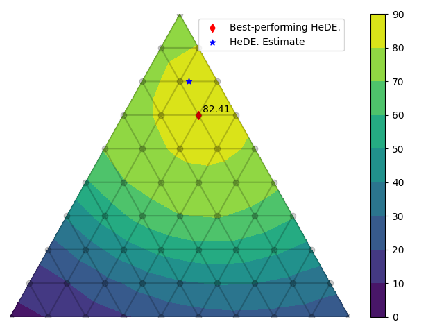
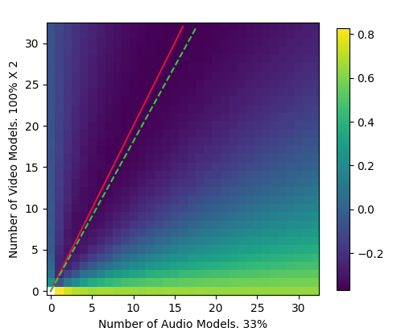
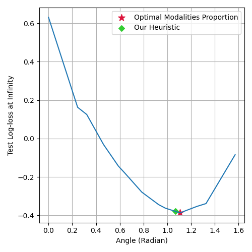

Fusion-Free Multimodal Classification with Heterogeneous Deep Ensembles
Abstract
In multimodal classification, late-fusion approaches classify concatenated modality-specific features extracted by unimodal neural networks. When modality imbalance is pronounced, various regularization techniques have been proposed to balance the learning process and overcome the inferior performance of late-fusion networks. In contrast, this work demonstrates that multimodal data can be effectively classified without any explicit modality fusion, using deep ensembles of unimodal networks. We systematically compare deep ensembles to late-fusion networks at equal parameter count and show that ensembles consistently outperform state-of-the-art late-fusion methods designed to address modality imbalance when trained from random initialization. This advantage also holds over intermediate-fusion techniques we evaluated and over hybrid methods that combine unimodal and multimodal classifiers. We propose and empirically validate a method for selecting the number of models per modality in an ensemble, avoiding computationally expensive exhaustive search. Under extreme modality imbalance and small ensemble sizes, the heuristic indicates that ensembles of unimodal models trained solely on the stronger modality are preferable. As the ensemble scales up, incorporating models from the weaker modality becomes beneficial. Both predictions align with our empirical findings. However, the heuristic becomes less reliable when the diversity of ensemble members is low. To systematically explore the challenges of optimizing multimodal models, we propose a synthetic multimodal framework that allows control over both the number of modalities and their predictive strength. Our findings are consistent across synthetic and real-world datasets. Finally, by fitting scaling laws to bimodal datasets, we estimate the asymptotic performance of ensembles.
Key Contributions
- Ensembles beat fusion at equal parameter count. Deep ensembles consistently outperform state-of-the-art late-fusion methods designed for modality imbalance (OGM-GE, MMPareto, AUG, InfoReg, ReconBoost, LFM), intermediate-fusion networks (MMTM, cross-attention) for both CNNs and Transformers, and the hybrid I2M2.
- A cheap allocation heuristic. A closed-form rule based on unimodal validation losses picks how many networks to train per modality, avoiding exhaustive search. It predicts that homogeneous ensembles win at small sizes under extreme imbalance and that heterogeneous ensembles take over as the ensemble grows.
- A controllable synthetic multimodal benchmark. Built from real data, it controls the number of modalities and their predictive strength and, unlike prior synthetic benchmarks, allows training overparameterized networks, reproducing the optimization difficulties seen in practice.
- Scaling laws for heterogeneous ensembles. Power laws fitted on synthetic and real bimodal data show that unimodal test losses reliably predict the asymptotic test loss of the heterogeneous ensemble.
Heterogeneous Deep Ensembles
We train \(n_m\) unimodal classifiers \(g^m_{k} = L^m_{k} \circ f^m_{k}\) on each modality \(m\), each from a different random initialization and fully independently. A heterogeneous deep ensemble (HeDE) combines networks trained on different modalities; a homogeneous deep ensemble (HoDE) uses a single modality. Neither performs any form of modality fusion. For two modalities, the HeDE averages the logits of all \(N_{\text{ens}} = n_1 + n_2\) members:
Averaging logits rather than probabilities is crucial: it improves accuracy and yields well-calibrated predictions without post-hoc calibration. For a fair comparison, every ensemble is matched to a late-fusion network with the same feature extractors, differing only in the classification head.
How many networks per modality?
The cross-entropy validation loss \(l_i\) of a unimodal classifier on modality \(X_i\) estimates the conditional entropy \(H(Y \mid X_i)\). We allocate networks in proportion to the inverse losses:
using the Largest Remainder Method so that counts sum to \(N_{\text{ens}}\) (ties broken by smaller \(l_i\)). The heuristic needs only one trained model per modality and gives near-optimal allocations on synthetic and real-world datasets.
A Controllable Synthetic Multimodal Benchmark
Class-aligned setup. Split a unimodal dataset (CIFAR-100, ImageNet-1K) into disjoint subsets of sizes \(s_1, s_2\) and pair same-class samples to form multimodal inputs. Shrinking one subset makes that modality weaker and faster to converge, reproducing the modality imbalance seen in real data. Splits are denoted \((s_1/n,\ s_2/n)\), e.g. (0.05–0.95), and extend naturally to \(M > 2\) modalities.
Instance-aligned setup. Build modalities from the same image via complementary frequency bands, \((G_{\sigma_1}(x),\ x - G_{\sigma_2}(x))\), with Gaussian smoothing \(G_\sigma\). The bands overlap, match exactly, or leave a gap depending on \(\sigma_1\) vs. \(\sigma_2\), giving each modality its own features.
Results on Synthetic Data


Against AUG, InfoReg, MMPareto, OGM-GE and ReconBoost, HoDEs win only in the most imbalanced split (0.05–0.95); HeDEs are best for every other split. As the ensemble grows, the advantage of HoDEs disappears: from size four onward, HeDEs outperform HoDEs and all late-fusion methods, and the heuristic (gray “HeDE (estimate)”) catches the switch from homogeneous to heterogeneous ensembles. The same pattern holds on ImageNet-1K, CREMA-D and Kinetics-400.
Three modalities. On trimodal ImageNet-1K, we train every possible ensemble of nine networks and compare it with the allocation chosen by Eq. (1). Pick a data split below: under moderate imbalance the best ensemble lies in the interior of the triangle, so it uses models from every modality, and the heuristic lands on it or right next to it.
Trimodal ImageNet-1K: allocating an ensemble of N = 9 networks
Ensemble accuracy for every way to split 9 networks (hover a point); corners are homogeneous ensembles.
Validation loss of each unimodal network
Accuracy, %. Δ: accuracy of the Eq. (1) allocation minus that of the best allocation (brute force). Late fusion ×3: ensemble of three late-fusion networks (nine encoders, the same parameter count as the HeDE).

Instance-aligned modalities. Ensembles beat the late-fusion baseline for all three frequency-band configurations (Gap / Exact / Overlap).
Results on Real-World Data
We evaluate on CREMA-D (small, audio-visual), Sarcasm (small, text-visual), Kinetics-400 (large, audio-visual) and CMU-MOSEI (medium, audio-text-visual). All baselines were reproduced from the authors' original code.
CREMA-D: a leakage-free split
| Method | Accuracy (%) |
|---|---|
| Vanilla LF | 56.7 ± 1.6 |
| OGM | 56.7 ± 1.4 |
| LFM | 63.2 ± 1.7 |
| AUG | 65.0 ± 1.6 |
| InfoReg | 59.7 ± 1.1 |
| MMPareto | 61.2 ± 0.8 |
| ReconBoost | 61.7 ± 0.7 |
| Audio HoDE | 58.2 ± 1.4 |
| Video HoDE | 62.8 ± 1.5 |
| HeDE | 71.1 ± 3.1 |
Mean accuracy and std. over 5 runs on the clean CREMA-D split.
Many prior CREMA-D results use splits where the same actor appears in train and test, which lets models exploit actor identity. On our actor-disjoint split, every baseline drops by 6.7–16.9 points (e.g. AUG 80.9 → 65.0, LFM 80.1 → 63.2).
On the clean split, a size-2 HeDE (one audio + one video network) reaches 71.1%, which is +6.1 points over the best late-fusion method, and the heuristic predicts the optimal allocation.
Which mix, and how many networks? The panel below starts from the setting of the table (all training data, one video frame) and shows accuracy against the share of video networks in the ensemble. Weaken or strengthen either modality, change the ensemble size, and choose which of the three to animate or scrub with the slider. Heterogeneous mixes beat both homogeneous ends, and the allocation from Eq. (1) stays close to the best mix.
CREMA-D: which mix of audio and video networks is best?
Mean accuracy ± std (band) over ensembles drawn from 32 audio and 32 video networks. Faded lines: the other values of the animated knob. Red diamond: best mix; blue star: allocation by Eq. (1); dashed line: Eq. (1) before rounding. Video networks see 1 frame unless stated. Hover over the chart to read off any point.
Kinetics-400


Audio is much weaker than video on Kinetics-400. From ensemble size 4, HeDEs consistently outperform HoDEs, the same scaling pattern as on synthetic data. The heuristic allocation stays within about one network of the brute-force optimum. On Sarcasm (fine-tuned BERT-Base + ResNet-50), HeDEs match the best late-fusion methods at small sizes and outperform all of them from ensemble size 6.
Beyond Late Fusion: Intermediate-Fusion and Hybrid Models
Adding MMTM fusion blocks at progressively earlier layers gives at most marginal gains over vanilla late fusion. The hybrid I2M2, which averages log-probabilities of unimodal and multimodal networks, also falls short of deep ensembles at equal parameter count.
| Dataset | LF | MMTM-1 | MMTM-2 | HoDE(2) | HeDE(2) |
|---|---|---|---|---|---|
| C-100 (0.05–0.95) | 34.0 | 35.3 | 33.6 | 78.5 | 74.1 |
| C-100 (0.5–0.5) | 82.5 | 82.4 | 82.1 | 71.6 | 86.9 |
| CREMA-D | 56.7 | 58.7 | 58.9 | 62.8 | 71.2 |
Accuracy (%) vs. intermediate fusion (MMTM-X: X fusion blocks). HoDE(2) is trained on the stronger modality.
| Dataset | HeDE(4) | I2M2 |
|---|---|---|
| CIFAR-100 (0.05–0.95) | 82.0 | 74.9 |
| CIFAR-100 (0.5–0.5) | 88.9 | 87.9 |
| ImageNet-1K (0.01–0.99) | 77.7 | 62.4 |
| ImageNet-1K (0.5–0.5) | 88.5 | 88.0 |
| CREMA-D | 75.3 | 70.1 |
Accuracy (%) vs. the hybrid I2M2 at equal parameter count.
Scaling Laws
For a fixed proportion of audio and video models, parameterized by an angle \(\theta \in [0, \pi/2]\), the test loss of a HeDE follows a power law in the ensemble size \(N\):


The power law fits well across all 24 bimodal CREMA-D configurations, and the heuristic recovers the optimal proportion \(\theta_{\text{opt}} = \arg\min_\theta L_\infty(\theta)\). A linear regression from the unimodal log-losses predicts \(\min_\theta L_\infty(\theta)\) with \(R^2 = 0.96\). Unimodal validation losses are therefore enough to estimate both the composition and the expected performance of a heterogeneous ensemble before training any ensemble.
Limitations & Open Questions
- Low-diversity ensembles. On binary CMU-MOSEI, deep ensembles fall short of naive late fusion, and the heuristic misallocates models when the optimum favors one dominant modality. Late fusion still does not beat the best possible ensemble.
- Tasks that need joint reasoning. On Hateful Memes, where both modalities must be processed together, late fusion outperforms deep ensembles.
- Theory. The heuristic works well empirically, but its theoretical basis remains open, as does whether a fusion architecture can be designed to match deep ensembles.
BibTeX
@inproceedings{burenko_2026_fusion_free_ensembles,
author = {Burenko, Ilya and Vetrov, Dmitry},
title = {Fusion-Free Multimodal Classification with Heterogeneous Deep Ensembles},
booktitle = {Advances in Neural Information Processing Systems 39 (NeurIPS 2026)},
year = {2026},
note = {To appear},
url = {https://openreview.net/forum?id=8Im8HCejDY}
}Acknowledgements
I.B. thanks Maria Ponomareva for her support, and Alexander Binder, Lalith Manjunath, Callum Murphy-Barltrop, Andrei Politov, and Martin Weigert for valuable discussions. I.B. acknowledges the financial support by the Federal Ministry of Research, Technology and Space of Germany and by Sächsische Staatsministerium für Wissenschaft, Kultur und Tourismus in the programme Center of Excellence for AI-research „Center for Scalable Data Analytics and Artificial Intelligence Dresden/Leipzig“, project identification number: ScaDS.AI. The authors gratefully acknowledge the computing time made available to them on the high-performance computer at the NHR Center of TU Dresden. This center is jointly supported by the Federal Ministry of Research, Technology and Space of Germany and the state governments participating in the NHR (www.nhr-verein.de/unsere-partner).